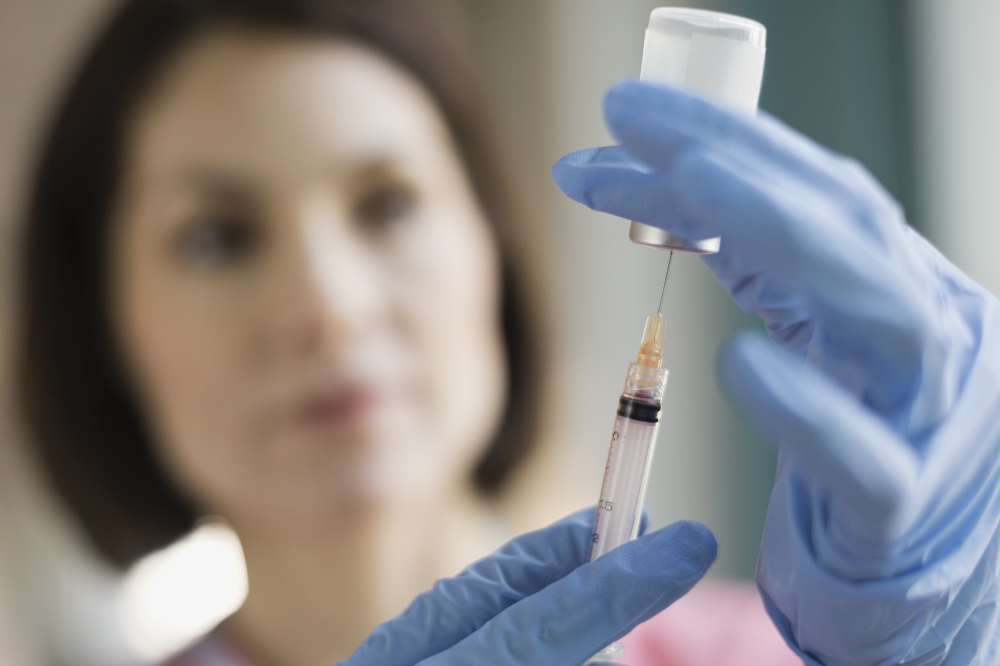

КОИ ЛЕКОВИ СЕ КОРИСТАТ ВО БОРБАТА ПРОТИВ КАНЦЕРОТ?
Првиот лек кој ќе го споменеме и се користи секаде во светот е ДЦА. Тие се всушност таблети кои 90% помогнале во многу видови на рак. Се порачуваат преку Интернет, директно преку официјалната страница, кадешто ја пишувате вашата тежина и според неа ви се одредува доза која треба да ја пиете.
Овој лек е пронајден од Канадски научници, но фармацевтските компании не се заинтересирани за производство, затоа што лекот не може да биде патентиран. Канадските научници го тестирале овој лек и уништиле канцер на бели дробови, мозок и гради, додека здравите клетки останале недопрени. Третманот со овие лекарства не вклучува методи на гликолиза, туку целосно е фокусиран на митохондриите. Тие ги активираат митохондриите кои веднаш откако ќе бидат активирани, брзо и успешно се борат против канцерот. Овој процес овозможува ефект на реактивација наречен апоптоза, Митохондриите во себе имаат програм за самоуништување кој се активира, кога станува збор за клетките на ракот. Без апоптоза туморите растат брзо и неконтролирано, бидејќи нивните клетки одбиваат да се деактивираат. Функционалните и активни митохондрии, благодарение на овие лекови го започнуваат овој процес и ги исклучуваат клетките на ракот. Кога процесот на гликолиза се деактивра, телото произведува помалку млечна киселина, така што оштетеното ткиво околу клетките на ракот не се распаѓа и на тој начин не се создава соодветен терен за раст на нови тумори.
DCA
КУБАНСКА ВАКЦИНА ПРОТИВ РАК НА БЕЛИТЕ ДРОБОВИ
Кубанската вакцина против рак на белите дробови го трансформира канцерот во хронично заболување, односно ги одржува во живот пациентите кои редовно примаат терапија. Камило Родригез т.е раководителот на тимот кој ја создаде оваа вакцина го тврди ова и вели дека целта на оваа вакцина не е да го излекува болниот кој има рак на белите дробови во поодминат стадиум, туку да му овозможи да живее со болеста. Поточно, вакцината го успорува и прекинува напредувањето на метастазите на другите органи. Со самото тоа се зголемува преживувањето и квалитетот на животот, истакнува кубанскиот лекар. Вакцината е безбедна и како таква е регистрирана од кубанската агенција за лекови.
